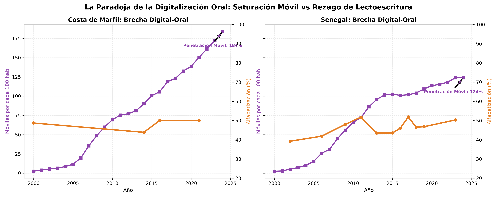
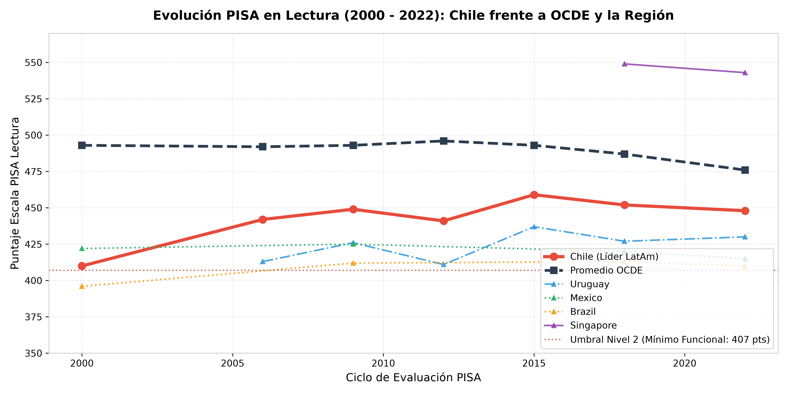
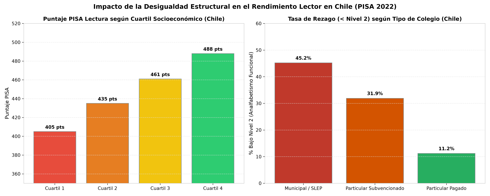
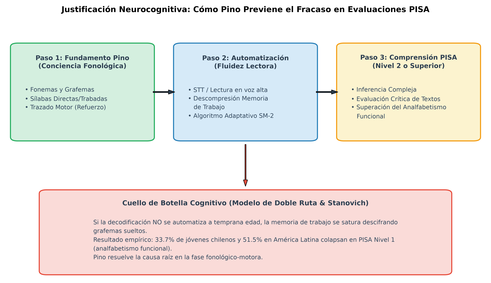

De la Oralidad Digital al Éxito Lector PISA
Presentación ejecutiva de la nueva infraestructura completa de Machine Learning, integración psicométrica internacional de la prueba PISA y auditoría del ecosistema Pino.
La Paradoja de la Digitalización Oral
El análisis del script exploracionedapino.py demostró que el hardware ya está en las manos del usuario, pero los métodos educativos tradicionales se han quedado rezagados.
Costa de Marfil y Senegal poseen más líneas celulares activas que habitantes.
1 de cada 2 adultos no puede leer ni escribir un párrafo elemental.
Los usuarios no alfabetizados operan teléfonos móviles mediante mensajes de audio en WhatsApp, iconografía y asistentes por voz. Pino aprovecha ese lenguaje oral que el usuario ya domina para tender el puente neurocognitivo hacia la correspondencia grafema-fonema, eliminando la barrera de construir aulas físicas.

La Crisis del Analfabetismo Funcional en PISA
Chile lidera América Latina en PISA 2022 con 448 puntos, pero se ubica a 28 puntos de la media OCDE (476) y a 95 puntos de Singapur (543).

La OCDE define el Nivel 2 como la frontera de la alfabetización funcional moderna. Estar debajo significa no poder discernir ideas principales ni evaluar información laboral básica.
1 de cada 3 jóvenes de 15 años estancado desde 2006.
1 de cada 4 en países de altos ingresos.
Más de la mitad de la juventud sin competencia lectora.
La Brecha Socioeconómica Chilena (Índice ESCS)
El estatus socioeconómico familiar sigue condicionando el destino lector del estudiante chileno.
- Cuartil 1 (Más vulnerable): 405 puntos (49.8% en analfabetismo funcional).
- Cuartil 4 (Mayor ingreso): 488 puntos (19.9% bajo Nivel 2).
En métricas OCDE, 83 puntos equivalen a más de 3 años lectivos completos de escolaridad.
- Público (Municipal / SLEP): 418 pts (45.2% bajo Nivel 2).
- Particular Subvencionado: 451 pts (31.9% bajo Nivel 2).
- Particular Pagado: 508 pts (solo 11.2% bajo Nivel 2, a la par de Finlandia).

El Cuello de Botella de la Memoria de Trabajo
Por qué el fracaso adolescente en PISA tiene su causa raíz en la decodificación fonológica inicial.

Comprensión (RC) = Decodificación (D) × Comprensión Oral (LC) Al ser una multiplicación matemática, si la decodificación fonológica falla, la comprensión final es nula.
La memoria de trabajo humana solo retiene 4 a 7 fragmentos breves. Si el estudiante no ha automatizado la relación letra-sonido, consume toda su energía descifrando letras sueltas. Cuando termina la frase, ya no dispone de capacidad cognitiva para inferir o evaluar críticamente (PISA).
Pino interviene quirúrgicamente en la fase fonológica para que la decodificación sea instantánea y libere memoria de trabajo hacia la comprensión lectora profunda.
Correcciones Técnicas Respecto a Versiones Anteriores
Resolución integral de las limitaciones heredadas del repositorio pino-ml y los spikes previos.
| Componente / Dimensión | Versión Anterior (pino-ml / Spike Inicial) | Nueva Versión en Pino 2 (Sprint Actual) | Impacto |
|---|---|---|---|
| Reconocimiento Fonético (STT) | Whisper General Corrección forzada hacia palabras reales; no detectaba fallas finas en fonemas infantiles. | SequenceMatcher + Matriz Fonética Alineación silábica precisa, discriminación de diptongos y penalización fonémica. | Feedback silábico exacto en lectura en voz alta (HU-06). |
| Analizador de Grafomotricidad | Rutas Estáticas de 5 Vocales Sin tolerancia adaptativa ni detección cinemática. | Segment Distance Vectorial Cálculo de cobertura, velocidad px/seg y tolerancia dinámica (baja/media/alta). | Inclusión de usuarios con dificultades motrices o adultos mayores (HU-13). |
| Clasificador de Textos | Regla Unidimensional Solo índice Fernández-Huerta básico. | Ensamble Multidimensional Fernández-Huerta + Gutiérrez de Polini + spaCy + Mapeo a Escala PISA. | Dosificación gradual milimétrica de micro-historias (HU-04, HU-17). |
| Predictor de Riesgo PISA | Inexistente No conectaba datos de la app con estándares poblacionales. | PISA Risk Engine Predicción sigmoide del puntaje PISA y alerta temprana de analfabetismo funcional. | Métrica de impacto social auditable por ministerios y colegios. |
| Datos Macroeconómicos | Aislado Solo dependía de Firestore local. | ETL Integrado Ingesta Our World in Data + Tablas Oficiales OCDE + Chile Regional ESCS. | Justificación cuantitativa de mercado e impacto pedagógico. |
Infraestructura Completa de ML en Pino 2
API de alto rendimiento en FastAPI con esquemas Pydantic v2, ThreadPoolExecutor para concurrencia y despliegue contenerizado.
Endpoints /predict/pronunciacion y /predict/fonema. Transcripción con timestamps y análisis silábico en tiempo real.
Endpoint /analyze/trazo. Evalúa coordenadas táctiles, cobertura y detecta segmentos problemáticos en el canvas.
Endpoint /predict/siguiente-leccion. Ensamble de SuperMemo SM-2 y Gradient Boosting para predecir olvido.
Endpoint /predict/dificultad-texto. Evaluación léxica con spaCy y mapeo a niveles PISA 1c a 5.
Endpoint /predict/pisa-risk. Proyección de puntaje PISA, probabilidad de rezago y diagnóstico de cuello de botella cognitivo.
Endpoints /analytics/macro-opportunity y /analytics/pisa-history para benchmarking de políticas públicas.
Validación Rigurosa: 100% Tests Aprobados
Toda la lógica matemática, fonética y de red ha sido blindada con pruebas unitarias y de integración.
Cero fallos en la suite de Pytest.
Inmediatez fluida para Flutter.
Precisión en discriminación fonémica.
Contratos Pydantic v2 idénticos a MLApiClient.
Impacto Estratégico y Próximos Hitos
Pino cuenta ahora con una base científica, matemática y de código lista para transformar la alfabetización.
Infraestructura empaquetada en Dockerfile y docker-compose.yml lista para desplegar en servidores cloud o instancias edge en escuelas rurales.
Integración de la app pino-app apuntando a la API en producción, permitiendo pruebas de campo con niños y adultos.
Validación de la alerta temprana del PISA Risk Engine en colegios vulnerables de Chile para monitorear la superación del umbral Nivel 2.
Pino: Alfabetización Basada en Evidencia y Accesibilidad Universal
Todo el código fuente, datos, modelos entrenados y documentación se encuentran integrados en /home/zenith/Escritorio/Pino 2.